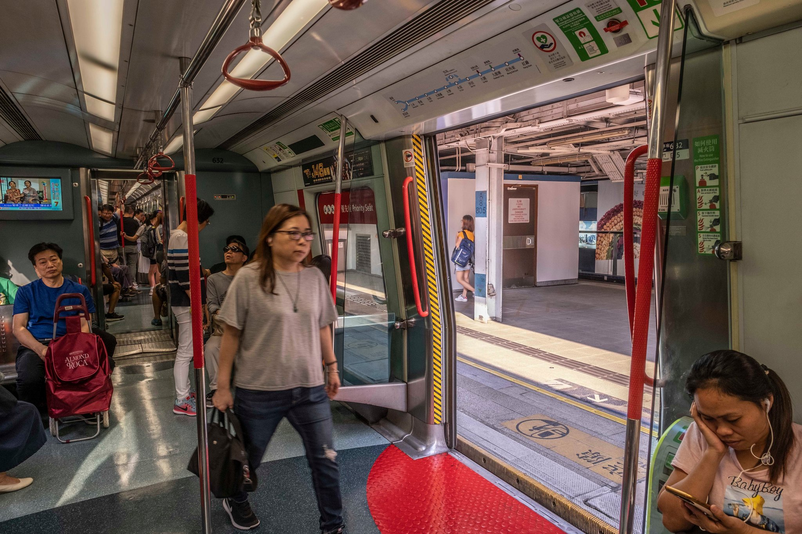

Your browser does not support the audio element.
+852
Before-and-After
Stand with Hong Kong
Fight for freedom
On a sweltering afternoon in August, antigovernment protesters in gas masks and hard hats flooded a six-lane road, prompting riot police officers to fire tear gas. But life on that Hong Kong street continued after the clashes faded, even as the neighborhood became the focus of further unrest.
First major protest Hundreds of thousands marched through some of Hong Kong’s main commercial districts like Wan Chai to express anger over contentious legislation, since scrapped, that would have allowed extraditions to the Chinese mainland. The demonstration on June 9 was effectively the start of this year’s protest movement, and among the largest demonstrations in the city’s history. Most days the neighborhood is a center of shopping and night life.
Storming the legislature When hundreds of thousands marched on the anniversary of Hong Kong’s return to China in 1997 on July 1, a smaller group of activists broke into the local legislature, smashing glass walls and spray-painting slogans in its inner chamber.On Oct. 16, Carrie Lam, Hong Kong’s embattled chief executive, tried to deliver her annual policy address in the inner chamber. But pro-democracy lawmakers heckled her out of the room.
Chaos in a mall A peaceful rally on July 14 descended into clashes with the police at a shopping mall in northern Hong Kong. There have since been other sit-ins and protests at the same mall, including one in September in which protesters stomped on a Chinese flag and sprayed it with black paint.But the mall has mostly stayed open, even as tourism and shopping has fallen amid the protests in Hong Kong that now roil the city most weekends.
Attack by a mob A mob of men in white T-shirts with sticks and metal bars on July 22 assaulted dozens of people, including journalists and a pro-democracy lawmaker, at a train station in Yuen Long, a district near Hong Kong’s border with mainland China. The attack raised questions about why nearby police officers, shown talking to the men that night in a park near the station, did not protect the victims.
Yuen Long clashes Five days after the Yuen Long assaults, tens of thousands of protesters converged on the district. Riot police officers, some of whom are pictured, fired multiple rounds of tear gas to disperse the crowds. As sunset approached months later, a calm pervaded the working-class neighborhood.
+852
Tension at a bus stop A police officer on July 30 aimed a shotgun at protesters during a clash in the Kwai Chung district, where residents usually catch the bus. The Hong Kong Police Force later said the weapon had been loaded with beanbag rounds, and that the officer drew it only after protesters attacked him.The protest movement portrayed the officer, Sgt. Lau Chak-kei, as a villain. On the Chinese mainland, they called him a hero, and the central government invited him to a military parade in Beijing on China’s National Day.
Disrupting the subway Protesters accuse Hong Kong’s subway operator, the MTR Corporation, of being too close to the local government and police force. Sometimes they express their anger by blocking trains from running, as they did during a citywide general strike on Aug. 5. Despite the disruptions, the system still carries millions of passengers a day.

Storming the airport In an effort to garner global attention, protesters occupied Hong Kong’s international airport on Aug. 12. A largely peaceful sit-in, it devolved into angry clashes late in the night. Authorities have since tightened security at the airport’s entrances.
Tsuen Wan clash Most weekends, a portion Hong Kong’s roads and highways are transformed into battlegrounds between protesters and the riot police, as was the case on Aug. 21 in this neighborhood, miles from the central business district. Most weekdays, a relative calm pervades the city.
Tear gas in Mong Kok The Hong Kong police have fired thousands of rounds of tear gas, as they did in the Mong Kok neighborhood on Sept. 6. They now regularly warn residents near street clashes to stay indoors and close their windows.
Arson in Central Hard-core demonstrators on the fringes of a peaceful rally set fire to an entrance to Central Station, a vital subway hub in the heart of Hong Kong’s financial district.
A flurry of arrests During widespread unrest in Hong Kong on Oct. 1, China’s National Day, the police arrested nearly 300 people across the semiautonomous territory, including a protester in the Wong Tai Sin district.
+852
A big rally Protesters flooded the Central business district, usually full of buses and streetcars, to drum up support for a bill moving through the United States Congress.The legislation would, among other things, penalize officials in mainland China and Hong Kong who suppress freedoms in the territory. The United States House of Representatives passed the bill the next day, and the Senate is now considering a similar legislation.
On a sweltering afternoon in August, antigovernment protesters in gas masks and hard hats flooded a six-lane road, prompting riot police officers to fire tear gas. But life on that Hong Kong street continued after the clashes faded, even as the neighborhood became the focus of further unrest.